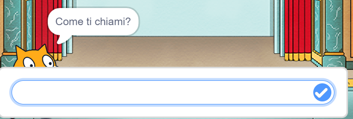
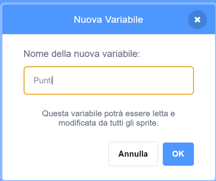

Questionari
con Scratch
Variabili, sensori, condizioni, timer, punteggio e liste per costruire un quiz interattivo.
Cosa vedremo
In questo modulo costruiremo passo passo un quiz interattivo in Scratch: partiremo dalla struttura base con messaggi e variabili, aggiungeremo input utente, timer a countdown e punteggio, fino ad arrivare a una versione scalabile con le liste.
costruire un questionario narrativo a tempo con punteggio finale
tempo, punti, risposta e posizione per tenere lo stato
blocco "Chiedi e attendi" della categoria Sensori
if / then / else, confronti e operatori logici
countdown con "ripeti fino a" e messaggio TempoScaduto
domande e risposte scalabili con indice pos
test specifici per verificare ogni parte del quiz
Il progetto quiz
L'obiettivo è realizzare un questionario a tempo con personaggi, domande, risposte controllate, punteggio e fine automatica. Il quiz combina tutti gli strumenti principali di Scratch — sprite, variabili, messaggi, condizioni, cicli — in un unico progetto coerente.
Un quiz ben strutturato ha uno stato iniziale chiaro (punti = 0, tempo = 60), una sequenza di domande ordinata tramite messaggi e un risultato finale calcolato in automatico alla fine del tempo.

Preparare i materiali
Prima di scrivere il codice conviene pianificare il progetto: personaggi, sfondo, variabili e messaggi. Un progetto narrativo come il quiz letterario usa sprite importati e uno stage scelto dalla libreria di Scratch.
Personaggi
Dante, Paolo e Francesca sono esempi di sprite importati per rendere il quiz narrativo e visivamente interessante. Ogni sprite può fare una o più domande.
Stage
Lo sfondo definisce il contesto visivo. Il codice dello stage gestisce il timer e i messaggi globali condivisi da tutti gli sprite.
Tempo
La variabile tempo memorizza i secondi rimasti. Il timer la decrementa ogni secondo fino a zero, poi invia TempoScaduto.
Punti
La variabile punti parte da zero e aumenta di uno per ogni risposta corretta. Alla fine viene mostrata con un messaggio del gatto.
Nuovo file ordinato
Prima del codice conviene preparare una struttura prevedibile. Organizzare bene nomi, variabili e messaggi evita di inseguire errori mentre il quiz cresce. Un progetto pulito all'inizio si modifica in pochi minuti.
File > Nuovo, poi assegna subito un nome chiaro al progetto in modo da ritrovarlo facilmente.
Aggiungi i personaggi caricando file PNG o usando la libreria integrata. Rinomina ogni sprite con un nome descrittivo.
Usa uno sfondo coerente con il tema del quiz. Lo stage ospiterà il codice del timer condiviso.
Crea tempo, punti e risposta per tutti gli sprite. Aggiungi pos se userai le liste per le domande.
Pianifica la catena: Start → Domanda1 → Domanda2 → … → TempoScaduto → Fine. Nomi coerenti prevengono confusione.
Variabili: cassetti
Pensa alle variabili come a cassetti etichettati: ogni cassetto conserva un'informazione e la restituisce quando serve. In Scratch una variabile può contenere numeri, lettere o parole — non ha un tipo fisso. Questo è comodo, ma richiede attenzione nei confronti.
Una informazione
tempo contiene un numero (i secondi rimasti); risposta contiene il testo digitato dall'utente nell'ultima domanda.
Cambia di
Il blocco "Cambia [var] di [n]" aumenta o diminuisce un valore, per esempio punti +1 dopo una risposta corretta o tempo −1 ogni secondo.
Porta a
Il blocco "Porta [var] a [n]" imposta un valore preciso. Usalo all'avvio per resettare: punti = 0, tempo = 60, così il quiz riparte sempre da zero.

Nome leggibile
Nomi semplici e descrittivi riducono gli errori: usa punti, tempo, pos, risposta invece di x, y, a, b.
Inizializzare il quiz
All'avvio bisogna riportare tutto allo stato corretto: azzerare punti e tempo, decidere quali sprite sono visibili e inviare il messaggio di partenza. Senza inizializzazione, una seconda esecuzione del quiz potrebbe partire con i valori sbagliati della prima.
Inizializzare significa decidere esplicitamente lo stato iniziale di ogni variabile e di ogni oggetto. È il primo blocco "quando si clicca la bandierina verde" dello stage. Tutti gli sprite devono essere visibili o nascosti in modo coerente prima del messaggio Start.
Domande e risposta
Il blocco "Chiedi e attendi" della categoria Sensori è il cuore del quiz: visualizza una domanda sullo schermo, apre una casella di testo, aspetta che l'utente scriva e prema Invio, quindi salva ciò che ha scritto nella variabile speciale risposta.
Chiedi e attendi
Blocco della categoria Sensori. Visualizza la domanda come fumetto e blocca lo script finché l'utente non preme Invio o il tasto di conferma.
Risposta
Scratch conserva sempre l'ultima risposta digitata nel blocco ovale risposta. Leggilo subito nel blocco successivo prima di fare un'altra domanda.
Unione
Il blocco "unione di … e …" concatena testo e variabili per costruire frasi dinamiche, ad esempio: "Bravo! Il tuo punteggio è " + punti.
Pulizia input
Spazi, maiuscole e minuscole possono far fallire il confronto. Pianifica le risposte attese in anticipo e comunicale chiaramente nella domanda.
Prima domanda
Una domanda minima raccoglie l'input dell'utente, controlla se la risposta è corretta e aggiorna il punteggio di conseguenza. Alla fine della gestione invia il messaggio per la domanda successiva, mantenendo il flusso ordinato.
Nota dove sta "invia Domanda2": fuori dal se/altrimenti, allo stesso livello. Così il quiz prosegue in entrambi i casi. Se lo metti dentro il ramo "allora", una risposta sbagliata blocca il quiz per sempre.
Case sensitive
Il computer memorizza esattamente ciò che l'utente scrive, senza interpretarlo. Questo è un problema concreto quando confrontiamo testo: lettere maiuscole, minuscole, spazi e accenti producono stringhe diverse anche se il significato è identico. Progettare il quiz tenendo conto di questo evita frustrazioni.
Maiuscole
si e Si sono due stringhe diverse per Scratch. Un utente che risponde "Si" con la maiuscola non otterrà punti se il controllo è su "si".
Spazi
Uno spazio involontario prima o dopo la risposta (es. " si") può far fallire il confronto. Indica nella domanda di non aggiungere spazi.
Sinonimi
si, certo, vero non sono equivalenti per il codice. Ogni variante va elencata esplicitamente usando l'operatore oppure.
Soluzione didattica
Due strategie: chiedere risposte guidate precise ("scrivi solo si o no") oppure accettare più varianti con l'operatore logico oppure in una condizione composita.
If / then / else
Le condizioni permettono al quiz di prendere decisioni automatiche: assegnare punti, mostrare feedback, passare alla domanda successiva o chiudere il gioco. Senza condizioni il programma esegue sempre gli stessi passi, ignorando le risposte dell'utente.
Se … allora
Esegue i blocchi interni solo se la condizione è vera. Se la condizione è falsa, quei blocchi vengono saltati e il programma prosegue oltre.
Se … altrimenti
Aggiunge un ramo alternativo: gestisce sia la risposta corretta sia quella sbagliata con feedback diversi. È la struttura più usata nei quiz.
Forma esagonale
I blocchi condizione in Scratch hanno forma a esagono e si inseriscono solo nello slot della condizione. Solo blocchi booleani (vero/falso) entrano in queste "bocche".
Operatori logici
I blocchi e, o, non combinano più condizioni semplici in una sola. Usali per accettare varianti di risposta o per verificare più variabili insieme.
Accettare più risposte
Quando la stessa risposta può essere scritta in modi diversi, si usano più confronti collegati con il blocco oppure. Ogni ramo aggiuntivo gestisce una variante legittima senza penalizzare l'utente.
Trovare l'equilibrio giusto: troppe varianti rendono il codice difficile da leggere; poche varianti frustrano chi risponde correttamente con un sinonimo o con un accento diverso.
Timer countdown
Il timer decrementa la variabile tempo di uno ogni secondo finché non arriva a zero, poi invia il messaggio TempoScaduto. Viene avviato sullo stage al ricevimento del messaggio Start, così funziona in parallelo con le domande degli sprite.
Mettere "attendi 1 secondo" prima di decrementare evita che il timer parta già a 59. Per bloccare gli script rimasti in attesa di input usa "invia TempoScaduto e attendi" seguito da "ferma tutto": la versione "e attendi" lascia finire gli script di chiusura prima dello stop, mentre "invia" da solo li interromperebbe a metà.
Cicli senza intasare
I cicli sono potenti ma vanno usati con criterio. Scratch gestisce più script in parallelo su sprite diversi: cicli senza pausa possono rallentare il progetto. Usare "attendi" dentro il ciclo garantisce che il codice non esegua migliaia di iterazioni al secondo.
Per sempre
Utile per sensori o timer sempre attivi finché il programma gira. Attenzione: continua anche dopo la fine del quiz se non si usa "ferma questo script".
Ripeti fino a
Spesso più chiaro quando esiste una condizione di fine nota. Il loop si ferma da solo quando la condizione diventa vera, senza bisogno di messaggi aggiuntivi.
Attendi
Il blocco "attendi N secondi" mette in pausa lo script. Nel timer si usa "attendi 1 secondo" per sincronizzare il decremento con il tempo reale.
Messaggio fine
TempoScaduto comunica a tutti gli sprite che il quiz deve cambiare stato. Ogni sprite può ricevere quel messaggio e nascondersi, fermarsi o mostrare un risultato.
Punteggio
Il punteggio rende il quiz misurabile e motiva chi gioca a rispondere bene. Va aggiornato in un solo posto per ogni domanda: evita di incrementare punti in più blocchi diversi o il conteggio diventerà difficile da controllare.
punti
La variabile punti parte da 0 all'avvio e aumenta di 1 ogni volta che l'utente risponde correttamente. È condivisa tra tutti gli sprite del progetto.
Monitor sullo stage
La casella di spunta accanto alla variabile (o i blocchi "mostra variabile" e "nascondi variabile") fa vedere punti e tempo in diretta sullo stage: chi gioca vede subito l'effetto di ogni risposta.
Feedback immediato
Il blocco "dire … per … secondi" mostra "Corretto!" o "Sbagliato" subito dopo ogni risposta. Il feedback immediato aiuta l'utente a capire cosa è successo e mantiene il ritmo del quiz.
Annuncio finale
Alla fine il gatto può usare il blocco "unione di … e …" per costruire il messaggio: "Hai totalizzato " + punti + " punti su 3!".
Architettura a messaggi
Quando il quiz cresce oltre due o tre domande, gestire tutto in un unico script diventa caotico. La soluzione è dividere il quiz in scene separate, ognuna attivata da un messaggio. Ogni sprite "ascolta" solo i messaggi che lo riguardano e ignora gli altri.
Vantaggi
Puoi aggiungere o rimuovere domande modificando solo la catena di messaggi. Il codice di ogni scena è autonomo e facile da leggere separatamente.
Regola pratica
Ogni "quando ricevo …" è un punto di ingresso: alla fine dello script di una domanda, invia sempre il messaggio del passo successivo per passare il controllo.
Tre sprite, stessa logica
Nei progetti a più personaggi il codice si ripete con piccole variazioni: cambiano le domande e i messaggi, ma la struttura interna di ogni script è identica. Riconoscere questo pattern rende più semplice aggiungere nuove domande senza inventare nulla di nuovo.
Sprite diversi
Ogni personaggio può fare una o più domande e reagire alle risposte con animazioni o dialoghi. Il gatto può fare da presentatore mentre Dante fa le domande di letteratura.
Messaggi diversi
Domanda1, Domanda2 e Domanda3 tengono ordinata la sequenza. Ogni sprite ascolta solo il proprio messaggio e passa il turno all'altro inviando il messaggio successivo.
Variabile comune
punti è condivisa tra tutti gli sprite: il blocco "cambia punti di 1" funziona uguale su Dante, Paolo o lo stage. Tutti scrivono sulla stessa variabile globale.
Pattern
Il pattern si ripete sempre: ricevi messaggio → mostra sprite → chiedi → controlla → aggiorna punti → invia prossimo. Imparalo una volta e applicalo su ogni domanda.
Tempo scaduto
Quando il timer arriva a zero, il quiz deve fermarsi in modo ordinato: interrompere le domande attive, mostrare il punteggio e ripristinare uno stato visivo pulito. I messaggi TempoScaduto e Fine coordinano tutti gli sprite contemporaneamente.
Il messaggio Fine evita che ogni sprite resti bloccato in uno stato casuale — nascosto, visibile o in attesa di input. Ogni "quando ricevo Fine" è un cleanup per quello sprite.
Strade infinite
Una volta che il quiz base funziona, puoi espanderlo in molte direzioni. Le estensioni non cambiano la struttura: si aggiungono blocchi dentro i pattern già noti, oppure si introducono nuove variabili per tenere traccia di informazioni aggiuntive.
Domande extra
Aggiungi nuovi messaggi DomandaN e i relativi script. La catena di messaggi si allunga senza toccare il codice esistente.
Suggerimenti
Prima di segnare errore, mostra un aiuto con un'altra domanda intermedia. Una variabile tentativi conta quante volte l'utente ha provato.
Tentativi
Consenti una seconda risposta ma assegna mezzo punto invece di uno. Usa una variabile contatore e un if per distinguere il primo dal secondo tentativo.
Penalità
Sottrai un punto con "cambia punti di -1" per risposte sbagliate. Annuncia la regola nella slide iniziale così l'utente gioca consapevole.
Difficoltà
Domande facili valgono 1 punto, difficili 2. Usa una variabile valore o scrivi il punteggio direttamente nel blocco di ogni domanda.
Report finale
Calcola la percentuale con (punti / totale_domande * 100) e mostra un giudizio: "Ottimo!", "Bene", "Riprova".
Liste: più valori
Quando le domande diventano molte, usare una variabile per ogni domanda diventa scomodo. Le liste di Scratch contengono più valori ordinati sotto un unico nome: ogni valore occupa una posizione numerata, e si può leggere con il blocco "elemento N di lista".
Lista domande
Ogni elemento è una domanda del quiz. Si crea nella sezione Variabili e si riempie dalla palette cliccando "+" o importando un file di testo.
Lista risposte
Una seconda lista parallela tiene le risposte corrette. L'elemento alla posizione N di risposte corrisponde alla domanda N di domande.
Indice
La variabile pos indica quale elemento leggere. Parte da 1 e aumenta di 1 ad ogni domanda con il blocco "cambia pos di 1".
Modificare via codice
I blocchi aggiungi … a, cancella … di e sostituisci elemento cambiano la lista mentre il programma gira: utile per cancellare le domande già fatte ed evitare ripetizioni.
Quiz con liste
Con le liste l'intero quiz usa un solo ciclo: lo stesso algoritmo scorre domande e risposte automaticamente. Aggiungere una domanda significa solo aggiungere un elemento alla lista — nessuna modifica al codice.
Il blocco "lunghezza di [lista]" conta gli elementi automaticamente: se aggiungi una domanda, il ciclo si allarga da solo senza bisogno di cambiare il numero di ripetizioni.
Collaudare il quiz
Un quiz che "sembra funzionare" non è ancora finito: va provato come farebbe un utente distratto, non come l'autore che conosce già tutte le risposte. Esegui questi test uno alla volta e correggi ogni problema prima di passare al successivo.
Per testare il timer senza aspettare un minuto intero, porta temporaneamente tempo a 5 nello script di avvio. Ricordati di rimetterlo a 60 prima della consegna.
Dati, regole, interazione
Il secondo modulo porta Scratch oltre l'animazione: input, condizioni, cicli, timer, punteggio e strutture dati.